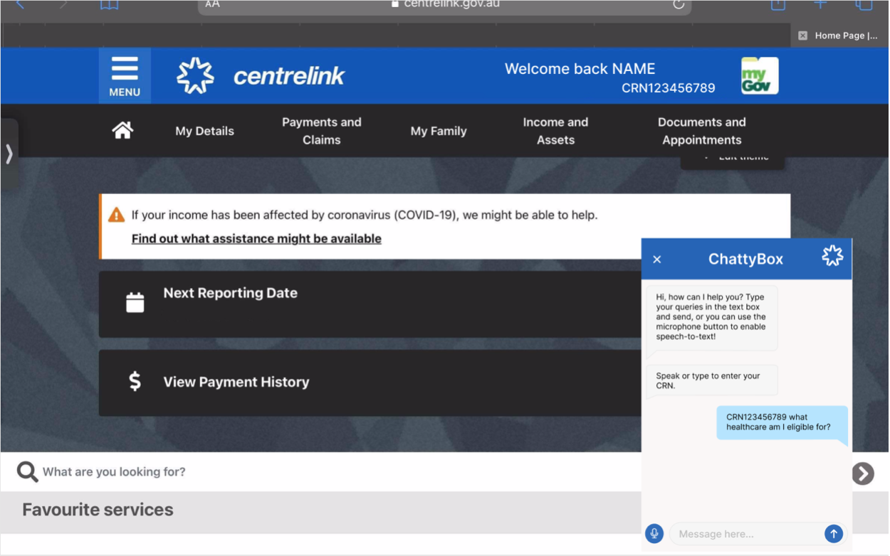
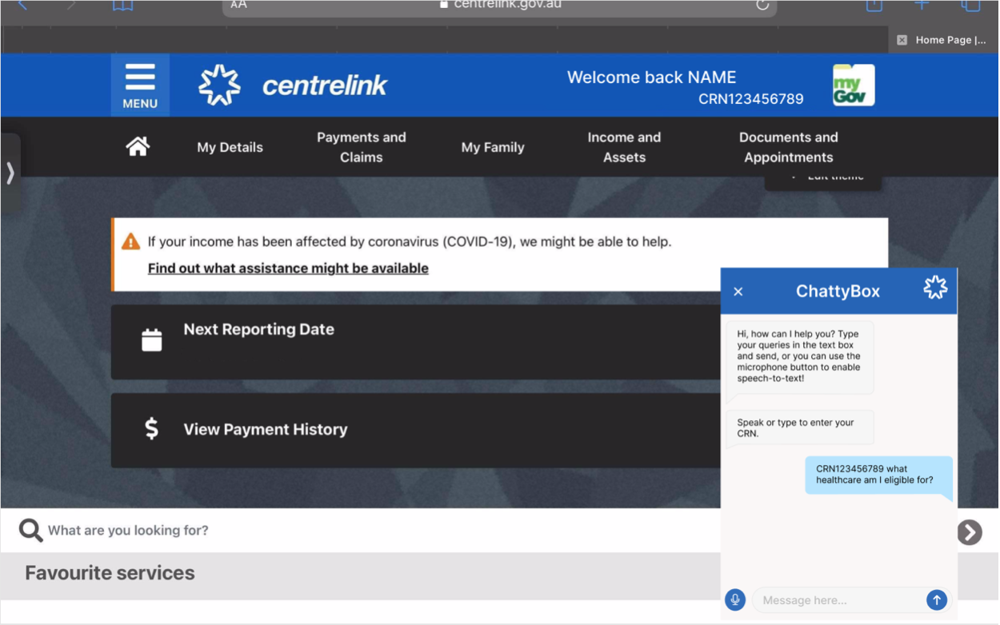

Project Story
Plans and Progress
The Chatty Box team detailed out the plans and outline of the project during its nascence. We focused on plotting out the possible routes and pathways of user interactions and establishing the requirements of our project.
First, we had a team meeting to discuss our project outline and basic tasks, along with our goals and ideal outcomes. This is important to do as soon as possible and at the beginning of the project timeline as it provides a foundation for us to revolve around, ensuring cohesion throughout the design of the project and the intended purpose of it. This provides us with a frame with which we can establish a timeframe on accomplishing certain milestones throughout the development of ChattyBox for effective time management.
We started by writing out our project overview, describing in short detail our topic, motivation and project landscape. This begins our project and sets the project from the beginning. Each group member then wrote about their career plans, explaining what they want out of their careers and what goals to achieve. This was an interesting task and the team got to learn about their fellow team members' career plans. Then the career plans were compared and contrasted with each other to learn more about the Chatty Box team and understand the broad landscape that a career in IT offers. Our project aim was written with our main goal clearly explained, and any other mini goals were detailed and expanded upon. Every project has a scope and limit, so we made sure to establish the limitations of our project, and to outline the parameters that our group and project must stay inside. Understanding the scope of your project is very important when planning your project and bringing it to life because there will be constraints and limits and it is better to know about potential limits before they get encountered so the project is ready for anything.
We then selected the tools that we would need for the project. Through testing and experimentation, we selected services based not only on whether they served our purpose, but to the extent and effectiveness of their execution. We also accessed and planned out any potential risks we may be taking while undertaking this project and how we can go about them or avoid them completely.
Testing is a critical step and requires a lot of time, so we planned out what our testing would encompass, why, who, when and how. This ensured that we knew what testing was required and needed to be done so that we could be prepared when the time came to it. Then we planned out what potential skills and jobs for positions that our project would require if it were to continue on its path of success.
After thoroughly planning out our project, we got set into the design phase of our project timeline. We had a group meeting to discuss some design ideas and plans that would work for our chat bot and what we would like it to look and function like. The first step of our design phase was to generate some rough designs in order to give us a sense of what was immediately a notable boon or failure. Once we were satisfied with our rough design, we developed the sketch into a more refined digital mockup. We then began developing the final product of our design based on feedback given on the mockup, and then created a detailed digital interface design for both the webpage and application. After further feedback based on our detailed digital designs, we altered and updated the design, and then finally moved on to the chat bot prototype.
To gain some ideas we looked at the Centrelink’s current chatbot and collected some screen shots of it to gather some visual research, as well as aid in the design of our chatbot, ChattyBox.
We drew a rough sketch on a piece of paper with a blue pen, creating a skeleton of what our chat bot would look like both in the Centrelink app for mobile devices and on the Centrelink website. The design mockup was very basic and worked as a rough outline of what we will then build off from. We also decided that we would seek feedback from external sources on our first rough design plans to determine user satisfaction with the first designs. This would prevent us from dedicating too much time and resources into features that would only have to be removed due to being problematic for the user.
Getting user feedback is important because ultimately, it is the users that we are catering to and that will be using our chat bot. Gaining user feedback on every design we make at every step will be a common practise that we will be doing throughout the project outline and especially in the design phase. We also researched what the Centrelink colour scheme is to know what colours we will be working with, as to also keep it consistent with Centrelink's overall visual design direction.
We decided that the chat bot will appear on the bottom right side of the Centrelink website as a small pop up window, and as for the Centrelink app it will open a new screen/page because applications function differently to large screen website interfaces. It will have an exit/back button located at the top left of the chatbot interface and the chatbot’s name as a title on the top of the screen. At the bottom of the interface will be a small microphone button to the left side, a message text box in the middle for user input written text, and a ‘send’ button to the right. Chatty Box the chatbot will automatically send two messages upon launch: “Hi, how can I help you? Type your queries in the text box and send, or you can use the microphone button to enable speech-to-text!”, followed by “Speak or type to enter your CRN.”. The reason this has been included is to keep the user informed on how to use the application and on its speech-to-text features. Additionally, because Chatty Box introduces itself first, it sets a positive mood and establishes a friendly connection between user and application.
Digital Sketch Mockup:
The digital sketch mockup was created based on the ideas from the rough paper sketch we had done prior, and thus was more detailed and polished. It displayed more information and labelled the interface more clearly. It was definitely much more different than the rough drawn sketch that was done on paper and this digital sketch mockup set the skeleton for us to follow when making the detailed UX design.
The digital mock up also illustrated how the chatbot would appear when it was not yet in use: a bar with an upward arrow inscribed on the right hand side to indicate affordance of expansion, and the label “Chattybox”. The user would click that arrow to expand and open the chat bot. Then the design of the chatbot was that the top of the chatbot would be a heading type space that holds the centrelink logo and the down facing arrow that would be used to collapse the chatbot to the right, the name “ChattyBox” in the middle and a “x” cross inside a circle to close the chatbot to the left hand side. The digital design included two options of closing the chatbot in it to later see which option and to what side the group and users liked better when receiving feedback on the design.
In the end we elected to take the downward facing arrow to the left hand side, as the centrelink logo is to the right. For the sake of consistency, the upward facing arrow on the collapsed view would be moved from the right side to the left as well. The rest of the design illustrated the two messages ChattyBox would automatically send upon opening that say “Hi, how can we help you?....” and the rest of the text, and “Please enter CRN” as mentioned prior. The mock up also shows a text bubble message on the right side to symbolise the user’s response. The bottom of the design holds a circle button with the symbol of a microphone inscribed upon it to the left hand side, along with an input box in the middle and a square blue “send” button to the right. The application version of the design follows the exact same look as the website design.
The difference in designs should not be too different between the digital sketch and the detailed UX interface, unless the users we asked for feedback didn’t like the sketch mockup. However, to our satisfaction, users were pleased with our design and liked it a lot. So then we got moving into the detailed and final design of how the chatbot would look and that our prototype would be built off of.
UX Design:
 

We used a website called Figma to create our final design because it offers a wide range of UX elements such as buttons, keyboards, and side panel bars. We will be using Figma to create our prototype as well, as it is a website made specifically for making digital prototypes and designs. A notable benefit of using Figma is that the buttons and all other UX elements are functional and work to make an interactive prototype. The user interface designers of the group set to work on the design of the ChattyBox chat bot, bringing the digital sketches and mockups to life.
We followed the colour scheme that Centrelink uses, and made sure to use the exact shade of blue that the centrelink website uses. The chat bot’s location on the website is to the bottom right hand side, just as in the mockup, and it appears as a small, blue rectangle box that has an upward facing arrow to the left, the name “ChattyBox” in the middle, and the centrelink logo to the right. The blue colour of the box is the same blue that centrelink is infamous for, and the details on it are all white. To open the chatbot, users press the inverted triangle. This is a convention that is followed across all interfaces that have an open and collapsible element, so the team made sure to follow digital interface conventions so that users will intuitively understand the meaning of the symbol due to having encountered it countless times before and subsequently knowing what to expect, assisting users on how to use our application and preventing user confusion and error.
The close button was chosen to be on the left side due to the centrelink logo being on the right side, and once the chatbot is opened the exit/close button is a cross rather than a downward facing arrow. The other difference between the mockup and digital design is that the text box where the text will be written into and the send button are also circular in shape, so it follows the design of the microphone and stays consistent with the interface elements. Additionally, because the chat text box is quite large, we resized the send button and replaced the word “send” with an arrow, a symbol that is readable in spite of the smaller button size and fully accessible with respect to language barriers. This change in the send button by using an arrow also follows conventions as send buttons can say send, but also usually just have an arrow which symbolises the send function, it also gives our design more room at the bottom where the text chat box is and the microphone button. Again, the application version of the chatbot follows the same design as the window pop up on the centrelink website, just fitted to the screen and size of a phone.
The designs were then ready for feedback. Due to the global Covid-19 pandemic and the fact that we cannot leave our homes we sent the designs digitally to some friends and family to get their feedback. The feedback we received was all positive and our family and friends loved the design and idea. We focused our pathways of feedback towards areas: Visual design, and prototype interaction.
While all of our users agreed that the app was effective in communicating its function visually, some users pointed out certain features that may require reconfiguration, such as its dependence on written language as opposed to symbolic language. This may result in slight difficulties with ensuring Chattybox itself could be used regardless of understanding of the English language. We asked for users to rate the appearance out of five based on three metrics: Visual Design, Apparent Ease of Use, and Overall Rating. The average scores, respectively, were 4.55/5 - 4.85/5 - 4.75/5.
Following this, we asked for users to test the functionality of the prototype itself. Users noted that, for the most part, the chatbot was extremely easy and intuitive to use, with little room for error. Mild issues with fluency were raised such as the need for users to click specifically on the small arrow button to bring up the menu, rather than the perceived affordance of the entire bar. The microphone function received notable appreciation.
Again, we asked users to rate the usability of the prototype out of five based on three metrics: Ease of Use, Availability of Interactive Interface Elements, and Overall Rating. The average scores, respectively, were 4.6/5 - 4.75/5 - 4.65/5 - Refer to (Figure X-1 in project overview page)
As a group we looked at the designs and liked them a lot too, however we did decide that having the centrelink logo on the website chatbot is unnecessary to include due to the fact that the centrelink logo is already on every page of their website, and the fact that the logo also takes up some interface space as well as makes it seem a little more cluttered - a descriptor we made every effort to avoid. So we ended up taking the centrelink logo out of the website version of the chatbot, but decided to keep it in the application version because the application opens a whole new screen for the chatbot, and it would be good to keep it in so the centrelink logo is on every page within the application.
While the design of our chatbot was being made, other group members worked on other tasks to ensure efficient work. The team's product/organisation researchers went to work on researching centrelink and their services to learn about what potential queries and questions users would ask ChattyBox. Centrelink is a government service that provides payments based on an individual’s circumstances and in order for our chatbot to be effective, we need to have in-depth and thorough knowledge on this.
They also tested out centrelink’s current chatbot to see what kind of questions you can ask it and how it responds to those queries. Because the ChattyBox team is working to improve centrelink's current chatbot, it is very important that we learn as much in-depth information about their current chatbot feature. We learnt that certain replies could be improved and expanded upon. Furthermore, we hoped that ChattyBox will be much more intelligent and will have a text-to-speech and speech-to-text feature. We learnt the most popular things users usually ask about and need help with. As expected, it was interesting to see a lot of queries in relation to the Covid-19 pandemic and Jobkeeper payments. This would be an obvious case as it is something that impacts the whole country, especially the whole state of Victoria, and the impact, sadly, is quite negative.
Common points of contention in user interaction with Centrelink are:
Inquiring on why payments and claims may be cancelled, or denied.
Reviewing factors of eligibility for payment schemes
Reviewing the payment plan that they will be allotted to within a particular payment scheme
Common claims such as Youth Allowance or Jobseeker
Disaster recovery schemes such as the Covid-19 Supplement
Reporting on income
Updating details on current state of living relevant to one’s eligibility for payments
Booking appointments and consultations
Reviewing payment history and debts
Reviewing nominations for business payments such as Jobkeeper
Moreover, we learnt about the factors that impact your eligibility for payment schemes and the amount you can receive include:
Current personal/familial income
Employment Status
Residential status
Familial situation
State of health
Student status
Position as a caretaker
Indigenous Australian inheritance
Apprenticeship status
These schemes are intended to assist those who may be suffering from any form of hardship, as a means to provide additional funds for those who may not have sufficient income to sustain themselves alone. This is something important to take note of when formulating our chatbot’s responses, to ensure it takes into account the broad range of factors that can impact a users eligibility for such payment schemes and the amount that they could potentially receive based on them.
We came up with four queries and their responses, that would use text recognition software to work. So if the user wrote asked the chatbot these four questions and sent the message these would be the appropriate responses:
Q 1) Where do i go to upload documents that were requested from Centrelink?
Mobile answer: On the homepage you will be able to see the “Frequently used” services under the tasks. There will be an “Upload Documents” button, please follow instructions when you enter press “Upload Documents”. If you are not able to see the “Upload Documents” button you will be able to press on “More” on the bottom and search for “Upload Documents”.
Website answer: On the website’s homepage you will be able to search for “Upload Documents” or simply press on “Upload Documents” under “Favourite Services”. If you are not able to find these pages through those methods please follow this link: https://www.centrelink.gov.au/apps/custonline_entry/dls/document-lodgement-service
Q 2) Where can i see my next payments?
Mobile answer: You are able to see your next payment and previous payment on the homepage of the app. If you would like to see the history of payments please press on “View Payments” on the homepage. Please note that in terms of future payments you will only be able to see the future two payments.
Website answer: On the homepage of centrelink you will need to press on “View Payment History”, from this page you will be able to see the future two payments and previous payments. If you are not able to find find “View Payment History” section please follow the link: https://www.centrelink.gov.au/apps/custonline_entry/payment-history
Q 3) What payments am I eligible to claim?
Depending on your current circumstances there are a variety of options available for you to choose. The link provides you detailed descriptions to see which claim best describes your current circumstances: https://www.servicesaustralia.gov.au/individuals/services/centrelink/centrelink-online-accounts/what-payments-you-can-claim-online
Q 4) How has COVID-19 affected my Jobseeker payments?
Here is a link that will provide you a detailed timeline of the upcoming changes to Jobseeker payments until March 2021: https://www.servicesaustralia.gov.au/individuals/subjects/payments-and-services-during-coronavirus-covid-19/if-you-get-payment/im-job-seeker
For the ChattyBox prototype we focused on the factors that can impact a users eligibility for payment schemes and the amount that they can receive. There are many payment schemes available so we decided to showcase the three most popular ones for the prototype: Student status, state of health and current personal/familial income. It isn’t required that the prototype has every potential question already coded into it and made etc, otherwise it would be the actual application and defeats the purpose of a prototype. In the prototype we have the three payment schemes listed as a menu item of which users can choose by either clicking the scheme in the menu, writing the name or number the scheme comes in the list (1,2,3...etc) into the text box and sending it as a message, or respond with speaking the scheme name or number they want to choose. For the purpose of a prototype, we have chosen to focus on the option of pressing the item from the menu to choose the wanted payment scheme. Depending on which option is pressed, the prototype then gives the user a different formulated response based on the users eligibility for the chosen scheme and information about the chosen scheme.
If the user chose the student status option this will be the response:
If you are a student who is 24 and younger, you may be eligible for the “Youth allowance” payment scheme. Please go to https://www.servicesaustralia.gov.au/individuals/services/centrelink/youth-allowance to apply.
If you are a student who is above 25, you may be eligible for the “Austudy” payment scheme. Please refer to https://www.servicesaustralia.gov.au/individuals/services/centrelink/austudy and apply from there.
If the user chose the state of health option this will be the response:
If your current health has been affected by COVID-19, you may be eligible to claim a crisis payment for National Health Emergency. Please refer to https://www.servicesaustralia.gov.au/individuals/services/centrelink/crisis-payment-national-health-emergency-covid-19 for further details.
If you are suffering from a disability, our Disability Support Pension will be able to assist you financially. Please refer to https://www.servicesaustralia.gov.au/individuals/services/centrelink/disability-support-pension for further information on how to claim it.
If you are currently suffering from an illness, unfortunately our Sickness Allowance scheme is no longer available to claim, but you can apply for another income support payment. If you are sick or injured and unable to currently work you may be eligible to claim Jobseeker Payments. Please refer to https://www.servicesaustralia.gov.au/individuals/services/centrelink/jobseeker-payment/how-claim/starting-your-claim-early on how to start your claim.
If the user chose the current personal/familial income option this will be the response:
If you are a low income earner and require help paying for basic living expenses of you and/or your family, you may be eligible for a few different types of payment schemes. Please refer to https://www.servicesaustralia.gov.au/individuals/topics/income-support-payment-description/34696 to find which category you qualify for. If you have trouble finding a category that suits you, please contact us at https://www.servicesaustralia.gov.au/individuals/contact-us/phone-us.
As with the UX design of our chatbot, we used a website called Figma to bring a version of the chatbot to life. The prototype is navigated through the interaction of pressing/tapping to select visual elements and so on, just like you would with a phone application or through the mouse/trackpad clicking on a computer device.
For the website version of the prototype, first you click the upward facing arrow (^) to open the chatbot. Then you click the text field box to write your query, or press the microphone button to enable speech-to-text and speak your query. Then you press send to send the chatbot your question. The chatbot will present you with three menu options to choose from and based on your choices you will get a different response. To go back to the menu options you click the message that says “go back”.
For the application version, the steps are the same except for the first, because you are already open on the chatbot screen. You just simply start by clicking the text field box to input your question!
To access our website prototype: https://www.figma.com/proto/hk5dct3GEQmGQTEU7ESam0/Untitled?node-id=17%3A56&scaling=scale-down
To access our application prototype: https://www.figma.com/proto/hk5dct3GEQmGQTEU7ESam0/Untitled?node-id=1%3A3&scaling=scale-down
We tested the prototype with different kinds of users. Our users ranged from an eight year old child (who knows how to use an application better than a lot of adults), to the older generation that didn’t grow up with the technology that we have today. Everyone gave positive and high ranking feedback and the collective of comments stated that it was easy to navigate and use and functioned as they would expect - Refer to (Figure X-2 in project overview page). This shows our team that we followed through with our requirement of having an easy to use and navigate application and website interface. It also proves how important it is to follow conventions, because as you can see, users then know what to expect from the functionality and interface of the program, making it loved by its users.
Prototype Pitch Presentation Video Link